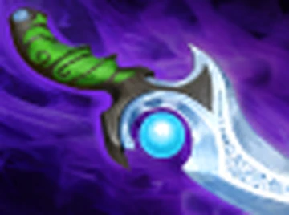
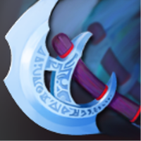
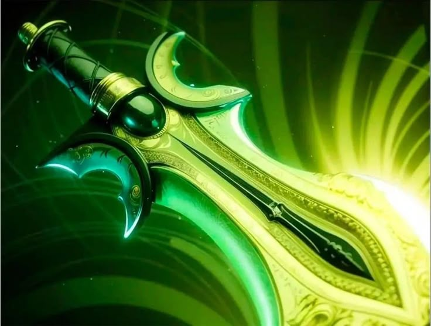
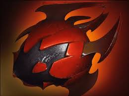
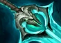
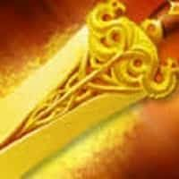
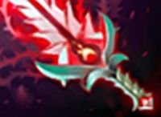

Предметы
Quelling Blade
Tango

Iron Branch
Slippers of Agility

Diffusal Blade
Diffusal Blade

Manta Style
Manta Style

Butterfly
Butterfly

Heart of Tarrasque
Heart of Tarrasque

Black King Bar
Black King Bar

Abyssal Blade
Abyssal Blade

Bloodthorn
Bloodthorn